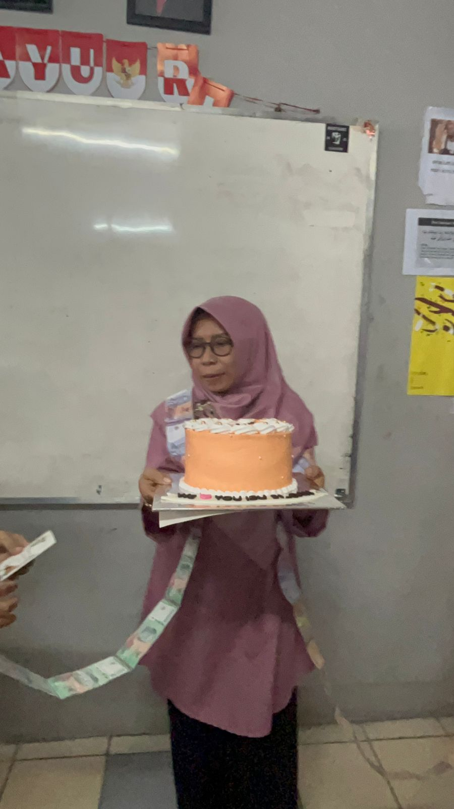
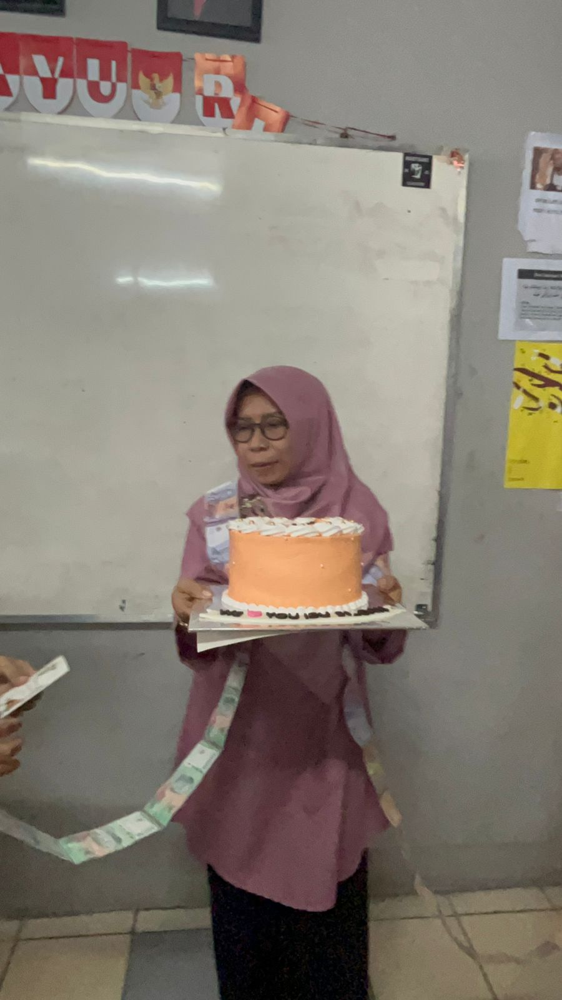

Bu Bahriah
Ibu Siti Bahriah, M.A. adalah wali kelas dari kelas 9.11 (sembilan sebelas) beliau juga merupakan gambar dari logo kelas kita. Beliau adalah orang yang sabar, buktinya aja beliau masih mau menjadi wali kelas kita selama 1 tahun meski kelakuan kita terkadang agak lain dan susah diatur 😅. Beliau juga merupakan guru Bahasa Arab kelas 9 di MTsN 1 Kota Tangsel. Makna dari logo 9.11 tersendiri adalah
- Gambar Bu Bahriah di tengah menandakan bahwa beliau merupakan wali kelas 9.11
- Gambar Palu dan Arit merupakan simbol dari kebersamaan, kesetaraan, dan kesolidaritas
- Gambar Bintang merah sendiri merupakan simbol religius
- Gambar Laut di bawah merupakan arti dari nama Bu Bahriah (arab بَØْر) yang artinya laut
- Gambar Padi sendiri merupakan lambang dari kesejahteraan
 
